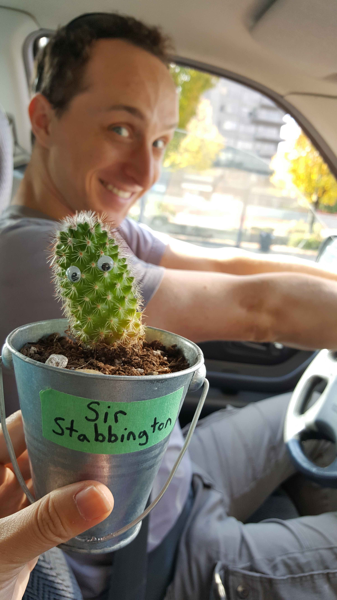
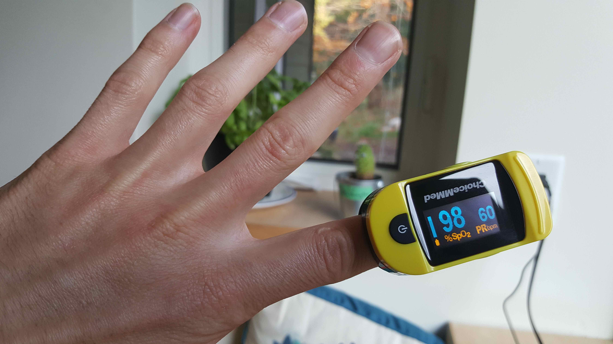
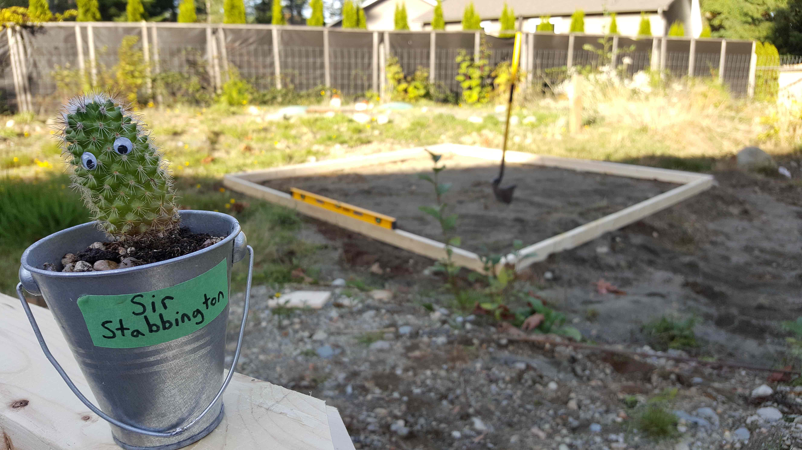

Videos - Current Project - In The News
How to Build an Ecosystem (Part 1)
15th Oct 2018 • 2 min read (340 words)
We’re doing it! Sir Stabbington and I are embarking on a grand adventure.

We recently trekked out from Vancouver to my brother’s house in Comox in order to build an ecosystem-in-a-jar that we’ll be moving into.
I’ve done the math so many different ways, and concluded that its just not possible to know how long I’ll be able to survive in an ecosystem as small as a medium-sized U-Haul Truck. I could probably /survive/ in the jar three days. But my goal is not to just ‘not die’, my goal is to end this project without having turned blue, developed brain damage, gotten heat stroke, or just generally caused lasting harm to my body. Therefore, I’m changing the question of this experiment from: “can I survive 3 days inside?” to, simply: “how long can I safely stay inside for?”

With safety and that new goal in mind, I’ve set a bunch of experimental limits. If any of these happen I will abort the mission:
1) If my blood oxygen levels reach 94ppO2
2) If an 8-hr time-weighted exposure limit of 10,000ppm ‘atmospheric’ CO2 is reached
3) If ‘atmospheric’ CO2 levels reach 10,000ppm (only one of my two sensors can measure higher values than this)
4) If ‘atmospheric’ oxygen levels drop below 16%
5) If my body temperature reaches 38.2°C
6) If Mark, my paramedic, says so
7) If I do not feel fit to continue
8) If I somehow reach three days
Some of those are OSHA limits, and some of them are just what I’ve decided I’m comfortable with based on my research.
My sensors are all programmed and ready, I’ve got all the wood cut, the ground levelled, and we’re ready to begin construction! This is happening!

I haven’t even gone inside this little ecosystem yet, and yet planning this has already wholly and fundamentally changed how I see life on planet Earth. There is so much science I want to share with you, but for now, I’ve got an ecosystem to build!